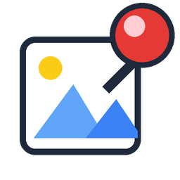

스샷을 콕! 화면에 붙여두는 도구
캡처 · 확대 · 판서 · 타이머 · 정답 가리개
⬇ 윈도우용 다운로드발표, 수업, 원격 설명 — 화면을 두고 이야기할 때 쓰는 도구입니다.
| 단축키 바꾸기 | 기본 단축키가 다른 프로그램과 겹치면 원하는 키로 바꾸거나 비워둡니다. 비워둬도 퀵 실행바로 실행합니다. |
|---|---|
| 저장 방식 선택 | 저장 폴더를 지정해두고, 위치를 묻지 않고 바로 저장하게 할 수 있습니다. |
| 클릭 통과 | 붙여둔 그림을 깔아둔 채로 그 아래 프로그램을 그대로 조작합니다. |
| 시작 시 자동 실행 | 컴퓨터를 켜면 트레이에 올라와 바로 쓸 수 있습니다. |
| 자동 업데이트 | 새 버전이 나오면 알아서 받아둡니다. 직접 확인할 수도 있습니다. |
| 오류 기록 | 문제가 생기면 기록이 남습니다. 문의할 때 그 파일만 첨부하면 됩니다. |
"Windows에서 PC를 보호했습니다" 창이 떴다면 추가 정보 → 실행. 위 2번을 먼저 하면 나오지 않습니다.
설치하면 창이 아니라 작업표시줄 오른쪽 트레이 아이콘으로 올라옵니다. 우클릭하면 전체 메뉴가 나옵니다.
| Ctrl+F1 | 영역 캡처 — 드래그 후 Enter로 화면에 핀 |
|---|---|
| Ctrl+F2 | 복사해둔 이미지를 화면에 핀 |
| Ctrl+1 | 화면 확대·축소 |
| Ctrl+2 | 판서 — Shift=직선, Ctrl=사각형, Alt+클릭=①②③ |
| Ctrl+3 | 타이머 |
| Ctrl+F3 | 가리개 — 덮어뒀다가 클릭하면 공개 |
겹치는 키는 트레이 우클릭 → 설정에서 바꿉니다. 맥은 Ctrl+Shift+1·2·3을 씁니다.
무료입니다. 결제도 회원가입도 없고 사용 기간 제한도 없습니다.
보통은 찍어서 저장하거나 붙여넣으면 끝입니다. 스샷핀은 캡처한 화면을 쪽지처럼 맨 위에 고정합니다. 다른 프로그램을 쓰는 동안에도 보이니 참고할 자료를 띄워두고 일할 수 있습니다.
코드 서명 인증서를 붙이지 않은 프로그램에 윈도우가 띄우는 안내입니다. 설치파일을 우클릭 → 속성 → "차단 해제" 체크 후 실행하면 뜨지 않습니다. 이미 떴다면 추가 정보 → 실행을 누르세요.
Windows 10·11 64비트에서 동작합니다. 맥용(Apple Silicon·Intel)은 다운로드 버튼 아래 링크에서 받으세요. 맥에서 처음 실행할 때 "확인되지 않은 개발자" 안내가 나오면 앱을 우클릭 → 열기.
화면을 두고 설명하는 자리 전반에 씁니다. 발표에서는 자료를 띄워두고 확대·판서로 짚어가며 이야기하고, 수업에서는 문제를 고정해두고 정답을 가려뒀다가 공개합니다. 원격으로 도와줄 때는 화면을 캡처해 화살표를 얹어 보내고, 화면 공유 중에는 모자이크로 개인정보를 덮습니다.
스샷핀은 창으로 뜨지 않고 작업표시줄 오른쪽 트레이 아이콘으로 상주합니다. 아이콘을 우클릭하면 전체 메뉴가 나오고, Ctrl+F1로 바로 캡처합니다.